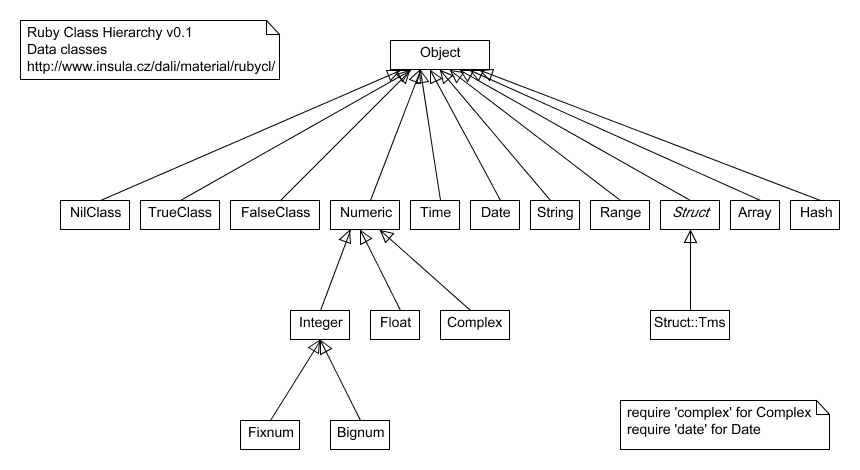

In most object-orientated languages, including Ruby, every object is an example or instance of a particular class.
Every object can do different things. A human can walk and talk, a bird can fly and a pen can write.
We use objects in coding to represent objects in the real world. When 'modelling' objects, we try to define their characteristics and things that they can do.
We often create programmable objects in order to model the behaviour of real-world objects, like Users and Invoices. However, they can also be objects that are not physical, like Time or Friendships.
We use classes to define our objects. They are just a piece of code that wraps around more code that defines our object.
We have looked at some data types and some of the things they can do.
Let's remind ourselves and have a look at an example of a String.
$ irb
"".class
=> String
But what is a String? A string is an Object... this empty string is actually an instance of a String class.
Let's have a look at something called the classtree in Ruby:

It's not actually 100% complete but it's close.
We can see the relationship between a String and an Object by doing:
"".class.superclass
=> Object
And what is an Object's superclass?
"".class.superclass.superclass
=> BasicObject
How can something be both a String and an Object and an example of a BasicObject? The answer is inheritance.
Inheritance is a kind-of downward-chaining relationship between two classes (the superclass and the subclass), whereby one class "inherits" from another.
All the instances of the subclass acquire the methods defined in the superclass.
Let's think of it in terms of a Human.
Human < Mammal < Animal
However inheritance, when trying to model real world objects, can get tricky because you could also write:
Human < Homosapien
It's up to you to decide how you define your classes in Ruby.
We call this type of inheritance 'classical' inheritance.
From the classtree, you can see that every Object can do certain things in Ruby, the methods that are defined in the Object class.
Let's create a new Object using Ruby:
$ irb
object = Object.new
=> #<Object:0x007f97691f80a8>
This .new syntax creates a new version of that object. We call that instantiation.
We can check what methods every object can do by doing
object.methods
=> [:nil?, :===, :=~, :!~, :eql?, :hash, :<=>, :class, :singleton_class, :clone, :dup, :taint, :tainted?, :untaint, :untrust, :untrusted?, :trust, :freeze, :frozen?, :to_s, :inspect, :methods, :singleton_methods, :protected_methods, :private_methods, :public_methods, :instance_variables, :instance_variable_get, :instance_variable_set, :instance_variable_defined?, :remove_instance_variable, :instance_of?, :kind_of?, :is_a?, :tap, :send, :public_send, :respond_to?, :extend, :display, :method, :public_method, :singleton_method, :define_singleton_method, :object_id, :to_enum, :enum_for, :==, :equal?, :!, :!=, :instance_eval, :instance_exec, :__send__, :__id__]
We say that this object is an instance of the Object Class.
A class is like a cookie cutter for an object. It defines how each new Object will be made and what properties it will have.
When you instantiate a new instance of an object, it is like cutting out a new cookie.
If you eat a cookie, you are eating one instance of a cookie. All the other cookies that you have cut out remain in tact.
This is a really important concept, so please ask question if you don't understand that analogy.
To chosen person:
"You are an instance of a Person class. Many of the basic things you can do, everyone else can do because they are also instances of a Person class."
"Can you please raise your hand?
Chosen person raises their hand.
"Other instances of the Person class haven't been asked to do anything because I've sent you an
instance method.""However, if I asked every Person to raise their hand... Class, please raise your hands..."
Everyone raises their hands.
"This is an example of a
class method."
Actually, if we were being exact - all people would have to raise their hands.
Let's create a new file:
$ touch person.rb
To define a class, we use the keyword class followed by the class name ClassName (class names that contain more than one word are written using the CamelCase convention). We will close a class with an end, at the end of the file.
class Person
def talk(words)
puts "I say, #{words}"
end
end
bob = Person.new
puts bob.class
We can call the .talk() method which we defined in the Person class. This is an instance method. We are calling it on the instance:
class Person
def talk(words)
puts "I say, #{words}"
end
end
bob = Person.new
# puts bob.class
bob.talk("hello")
We're going to be playing a bit more with defining custom classes and making methods. This is a really core concept in Ruby and it's important that everyone understands this.